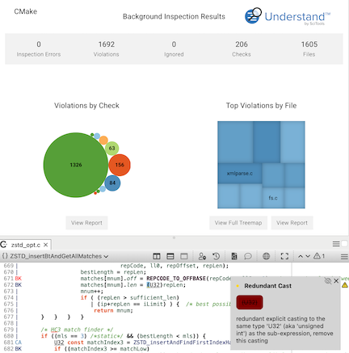
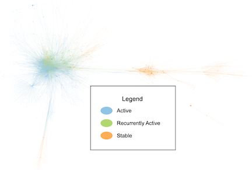
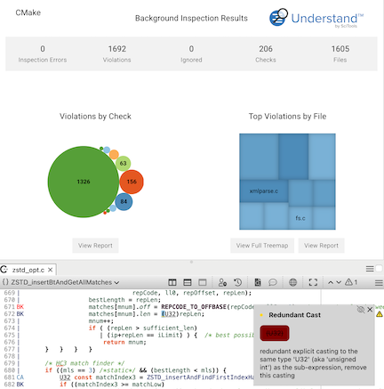
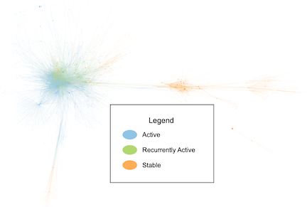

Architectures
Graphs and Charts
Interactive Reports


Metrics
CodeCheck
Solution: Git



Solution: HIS Metrics
Solution: Shared Tasks
Solution: Project Quality


Architectures |
Graphs and Charts |
Interactive Reports |
| Group your files to calculate dependencies and metrics, build graphs, and tag entities. More | Create custom graphs and charts. More | Combine graphs, tables, trees, and headings into exportable documents. More |
|
|
|
Metrics |
CodeCheck |
Solution: Git |
| Calculate custom metrics to export, sort, or color by. More | Validate your code against published standards and find vulnerabilities. More | Access authors and dates and find technical debt from recurrently active files, coupling, and minor contributors. More |
|
 |
 |
Solution: HIS Metrics |
Solution: Shared Tasks |
Solution: Project Quality |
| Enforce code quality with Hersteller Initiative Software (HIS) metrics. More | Find global objects accessed from multiple call trees. More | Grade your project following research papers. More |
|
|
|